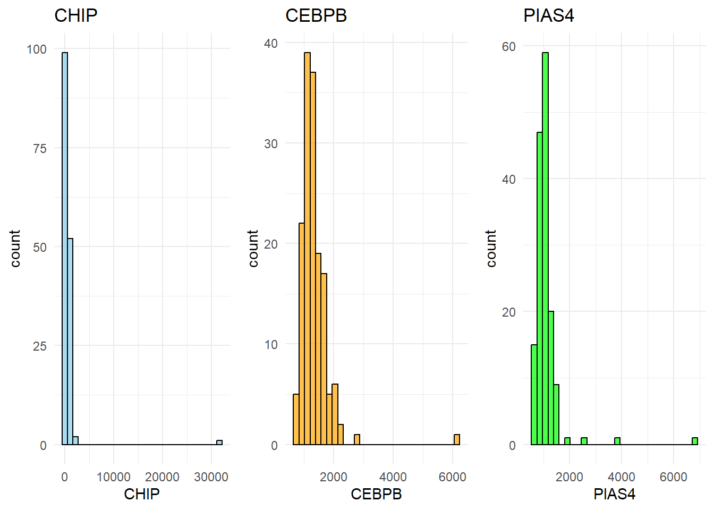
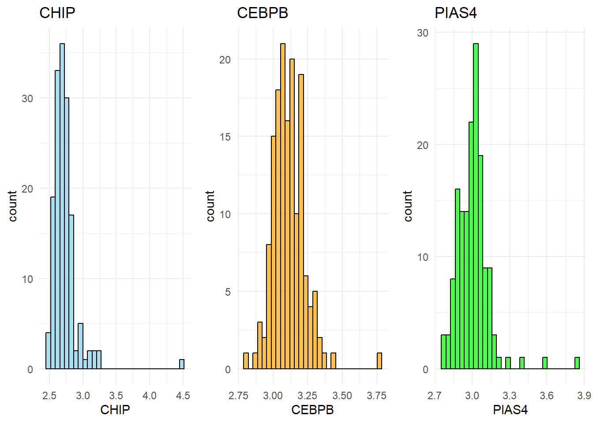

graph TD
A[T-tests and Random Forest] --> B[Extract p-adjusted values]
A --> C[Extract MeanDecreaseGini values]
B --> D[Min-Max Normalize p-adjusted values]
C --> E[Min-Max Normalize MeanDecreaseGini values]
D --> F[Combine Normalized Scores]
E --> F[Combine Normalized Scores]
F --> G[Calculate Combined Score]
G --> I[Select Top 10 Proteins]
Biomarkers of ASD
Abstract
Write a brief one-paragraph abstract that describes the contents of your write-up.
Dataset
The Data
This data for this project came from Hewiston et al, 2021, a study where the researchers were looking to predict ASD (autism spectrum disorder) from a total of 1,125 proteins found in serum samples, and find which of those proteins had the greatest effect on autism in 154 children, specifically boys between the ages of 18 months and 8 years. The average age of child was around 5 and a half years old, and from a relatively wide range of ethnicity, though the distribution varied between the two groups (typical development and ASD). The researchers also took into account what other medical conditions the children had, as well as what medications they were taking at the time of sampling.
The key variables in this study were the levels of each of these 1,125 proteins, as well as ASD severity, which was measured by ADOS (Autism Diagnostic Observation Schedule) scores. Through the use of three methods (random forest, t-tests and correlation analyses), a panel of nine proteins was found to have the highest predictive power for ASD in children. Data preprocessing steps included log transformations, normalization methods, and outlier trimming, before fitting machine learning models to be able to predict ASD based on this panel of proteins.
Summary of published analysis
Summarize the methodology of the paper in 1-3 paragraphs. You need not explain the methods in depth as we did in class; just indicate what methods were used and how they were combined. If possible, include a diagram that depicts the methodological design. (Quarto has support for GraphViz and Mermaid flowcharts.) Provide key results: the proteins selected for the classifier and the estimated accuracy.
Question One: We explored why the proteins were logged by simply by graphing the logged protein levels against their unlogged counterparts.
Question Two: We defined outliers as being outside of 3 standard deviations from the mean of a given protein. We then tabulated these outliers to see the distribution of outliers among the “ASD” and “TD” groups.
Question Three: We tried to merge the two variable importance results (p-adjusted, and MeanDecreaseGini) We did this by min-max normalizing both of them and adding them together to get a combined score. The top 10 protiens with the highest combined score were selected.
Question Four: Fit a random forest and an elastic net to the data. We then took the intersection of these two methods to get our selected variables. We put these variables into a logistic model
graph TD
A[Biomarker Data] --> B[Fit Random Forest]
A --> C[Fit Elastic Net]
B --> D[Extract Important Variables from Random Forest]
C --> E[Extract Important Variables from Elastic Net]
D --> F[Find Intersection of Selected Variables]
E --> F[Find Intersection of Selected Variables]
F --> G[Fit Logistic Model with Selected Variables]
The resulting accuracy rate is 0.779, which is higher then 0.753 achieved using the in class method. And the proteins selected were: “CK-MB”, “DERM”, “M2-PK”, “Protein S”
Findings
Impact of preprocessing and outliers
Looking into why the researchers utilized log-trasnforms.

After investigating some of the protein levels in biomarker-raw.csv, the reason for log-transforming the data is to reduce the significant skew that each of these proteins comes with. As a result, it would be very difficult to perform any analysis on data this skewed.

After log transforming the data, it becomes much less skewed, which helps stabilize variance data and makes extreme values less influential. This transformation often “normalizes” the data, allowing for better model accuracy and interpretability.
Outlier Analysis
Let’s define an outlier as being outside of 3 standard deviations from the mean of a given protein. Take the sum of each protein for a given subject. An “outlier subject” would then be considered someone who is in the 75th percentile or higher in terms of number of outlying proteins in their panel.
Let’s take a look at how outlying subjects are distributed across the two groups at the 75th, 90th and 90th percentile of outliying proteins.
# A tibble: 2 × 2
group count
<chr> <int>
1 ASD 17
2 TD 22# A tibble: 2 × 2
group count
<chr> <int>
1 ASD 5
2 TD 11# A tibble: 2 × 2
group count
<chr> <int>
1 ASD 3
2 TD 5By analyzing the outlying subjects in the study, it is clear that there are more “outlier subjects” in the typical development group. This trend may suggest that individuals in the typical development group have more heterogeneity in biomarker expressions, possibly due to a lack of ASD-specific physiological traits that standardize responses. Factors such as age, lifestyle, and individual genetic differences could lead to broader variations in biomarkers within this group, creating more natural outliers. This variability contrasts with the ASD group, where a narrower biomarker range may be influenced by common characteristics or biological patterns associated with the disorder.
Methodological variations
Task 3

Original Data
Partitioning Training/Testing

Only partitioning training/testing data in the beginning
Every metric was <=, probably because the dataset has very few observations and splitting the data makes our data even smaller
Fuzzy Selection

ttest_adjp <- ttests_out %>%
select(protein, p.adj)
rforest_gini <- rf_out$importance %>%
as_tibble() %>%
mutate(protein = rownames(rf_out$importance)) %>%
select(protein, MeanDecreaseGini)
protein_scores <- ttest_adjp %>%
left_join(rforest_gini, by = "protein")
protein_scores <- protein_scores %>% mutate(
norm_gini = (MeanDecreaseGini - min(MeanDecreaseGini, na.rm = TRUE)) /
(max(MeanDecreaseGini, na.rm = TRUE) - min(MeanDecreaseGini, na.rm = TRUE)),
norm_pval = 1 - ((p.adj - min(p.adj, na.rm = TRUE)) /
(max(p.adj, na.rm = TRUE) - min(p.adj, na.rm = TRUE)))
)
protein_scores <- protein_scores %>%
mutate(combined_score = (norm_gini + norm_pval) / 2)
proteins_sstar <- protein_scores %>%
slice_max(combined_score, n = 10) %>%
pull(protein)Only using Variable selection using a fuzzy intersection.
Fuzzy Intersection: We tried to merge the two variable importance results (p-adjusted, and MeanDecreaseGini) We did this by min-max normalizing both of them and adding them together to get a combined score. The top 10 protiens with the highest combined score were selected. (Code above)
Every metric decreased by a substantial amount. There could be variables that have high t-test scores but low rf importance and still be selected. This implies the hard intersection being much better than the fuzzy intersection (i.e. normalizing and then summing importance / scores and picking the top 10 proteins).
More Selected Proteins

Increasing the number of proteins increases every metric by a substantial amount (this was only increased to 15 proteins per test), but can be a result of overfitting.
All Methods Combined

Using every modification, every metric is slightly worse, but could be better at predicting new data.
Improved classifier
Task 4
Similar to the method in class, variable selection was done by fitting a random forest and an elastic net to the biomarker data. In order to ensure overfitting not being a problem, k-fold cross resampling was used for both data to tune the models. The panel of proteins was created by extracting all non-zero estimates from the elastic net and the top ten most important predictor variables from the random forest model and finding the intersection between the two.
[[1]]
term
1 CK-MB
2 DERM
3 M2-PK
4 Protein SA logistic model was fitting using the four proteins. The accuracy of the logistic model was calculated by using the yardstick package on the testing data that was split at the front. The resulting accuracy rate is 0.779, which is higher then 0.753 achieved using the in class method.
# A tibble: 1 × 3
.metric .estimator .estimate
<chr> <chr> <dbl>
1 accuracy binary 0.779